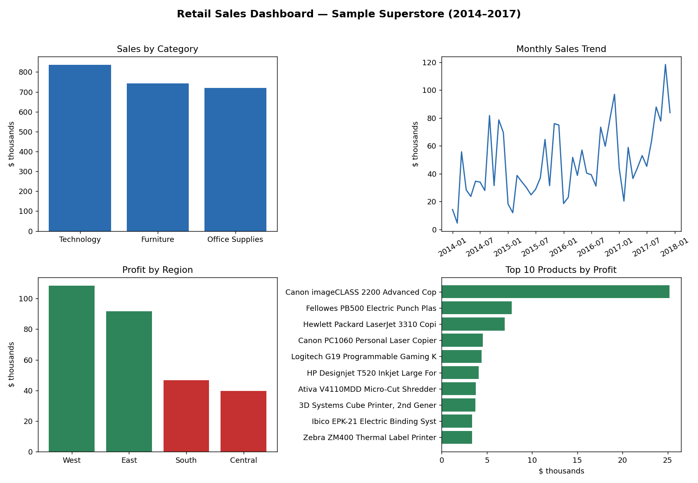
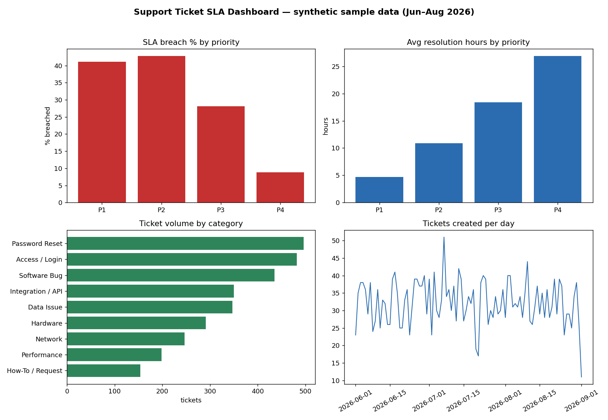
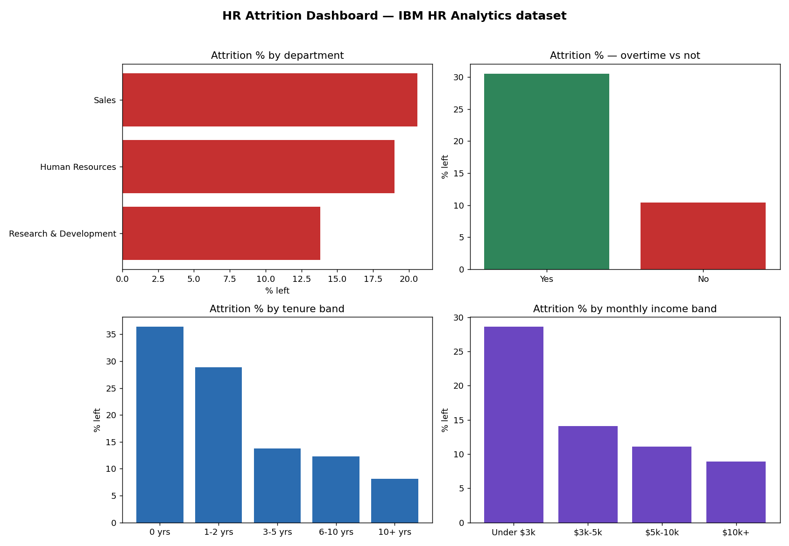
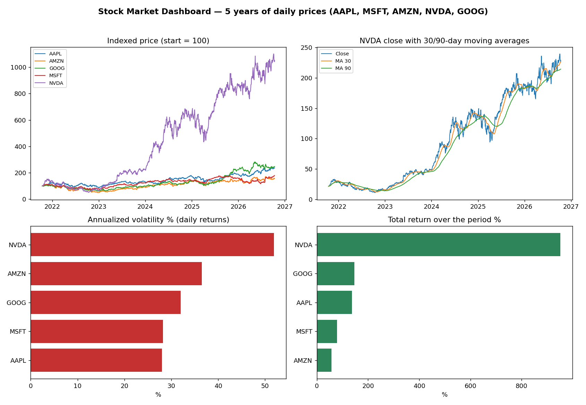
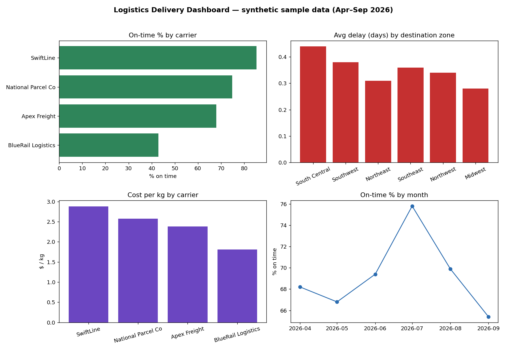

About
I supported GE’s FieldCore application for 10,000+ users at Tata Consultancy Services — fixing data with SQL, tracing issues in AWS logs, and working directly with the field technicians whose work stopped when the data was wrong.
Before that, I ran day-to-day operations at Savli Infra — production, inventory, and deliveries with real P&L consequences. I recently completed my MS in Engineering Management at Arizona State University.
My work sits where business needs, system problems, and real users meet. I am most useful when something is ambiguous or broken — I find the pattern, write it down clearly, and get the right people aligned on the fix.
Data Projects
Five end-to-end ETL projects — real code, real runs, dashboards, and written insights. Every number below comes from actually running the pipeline.
Retail Sales ETL & Dashboard

End-to-end pipeline on 9,994 real retail orders (Sample Superstore): cleaned in pandas, loaded into a SQLite star schema (fact + 4 dimensions), analyzed with SQL, charted in a 4-panel dashboard.
Key insight: Furniture is #2 in sales ($742K) but keeps only a 2.49% margin vs Technology's 17.40% — and any discount over 20% loses money per order line.
Support Ticket SLA Analytics

Ticket pipeline scoring SLA performance by priority, category, and team — breach rates, resolution times, reopen rate, and backlog aging. Built on seeded sample data, labelled as such.
Key insight: 27% of resolved tickets breached SLA, driven by Software Bug (70.7%) and Integration/API (69.9%) tickets; 86.8% of the open backlog was already 15+ days old.
HR Attrition ETL & Dashboard

IBM's real workforce dataset (1,470 employees) through a full ETL into SQLite, with attrition analysis by department, overtime, tenure, and income band.
Key insight: Employees who work overtime leave at 30.5% vs 10.4% for everyone else; Sales Representatives are the highest-risk role at 39.8% attrition.
Stock Market ETL — 5 Tickers, 5 Years

Daily price pipeline for AAPL, MSFT, AMZN, NVDA, and GOOG (6,270 rows): normalized into one warehouse table, with SQL window functions for 30/90-day moving averages, daily returns, and volatility.
Key insight: NVDA returned +951% over five years with the highest volatility (51.9% annualized); in the last year GOOG (+42.9%) and AAPL (+37.8%) led while MSFT added only +5.7%.
Logistics Delivery Performance ETL

Shipment pipeline (2,500 sample shipments, labelled) analyzing on-time performance, carrier cost vs reliability, and the cost of late deliveries across zones.
Key insight: The cheapest carrier ($1.81/kg) is on-time only 42.9% of the time vs 85.4% for the most reliable — and late shipments consume 24.6% of total delivery spend.
Case Studies
Scenario case studies — realistic business problems analyzed the way I work: find the root cause, prioritize the fix, and define how success gets measured. Baselines are stated assumptions; impacts are labelled projections in the full write-ups.
Operations
Warehouse Fulfillment Bottleneck
Same-day ship rate is 86% against a 95% promise, and overtime is climbing (scenario baseline).
Read the analysis
What the analysis found. Pack — not pick — is the real constraint: pickers finish waves faster than pack stations can clear them, and fast movers are slotted far from pack, adding travel to every order.
The fix. ABC re-slotting of fast movers near pack, plus hourly mini-waves sized to pack capacity. Targets the constraint first instead of adding pick headcount.
Last-Mile Delivery On-Time Performance
On-time delivery is 81% against a 95% client target, with failed first attempts driving repeat cost (scenario baseline).
Read the analysis
What the analysis found. Routes are sequenced by distance alone, ignoring promised time windows; the longest routes leave last, and bad addresses are only discovered at the door.
The fix. Time-window-aware route sequencing, longest routes dispatched first, and address validation at order intake before a route is ever built.
Inventory: Stockouts vs Overstock
Fill rate is 91% while 14% of inventory value sits in dead stock — both problems at once (scenario baseline).
Read the analysis
What the analysis found. One reorder rule is applied to every SKU, so fast, variable items stock out while slow movers pile up; lead-time variability is ignored entirely.
The fix. ABC/XYZ segmentation with reorder points built from real demand and lead-time variability (safety stock = z·σ·√L) and EOQ for order sizing.
Support Operations Queue Redesign
28% of first responses breach SLA, the backlog is 1,900 tickets, and 24% of contacts are repeats (scenario baseline).
Read the analysis
What the analysis found. All tickets enter one queue regardless of type, how-to and status questions consume agent time, and recurring issues are closed ticket-by-ticket instead of fixed once.
The fix. Tiered triage with skill-based routing, deflection of how-to/status volume to self-serve, and a problem-management loop that kills repeat issues at the root.
Manufacturing Downtime & OEE
OEE is 54% (78% availability × 82% performance × 84% quality) while weekend overtime runs every week (scenario baseline).
Read the analysis
What the analysis found. Changeovers take 95 minutes and repeat failures wait on off-site spare parts — availability losses dwarf the other two OEE components.
The fix. SMED changeover reduction (95 → 55 min) and on-site spares for repeat failures, before any capital spend on a second line.
Hospital Outpatient Scheduling
23% no-shows alongside 38-minute average waits and only 74% schedule utilization (scenario baseline).
Read the analysis
What the analysis found. Every appointment gets the same slot length (measured visits actually run 31/17/9 minutes by type), reminders are inconsistent, and no-shows are uniform — so overbooking is never used where it would help.
The fix. A standard reminder cadence, slot templates matched to measured visit lengths, and segmented overbooking only for proven high no-show groups.
Product
Food Delivery: Late Orders Killing Repeat Business
Only 74% of orders arrive inside the promised window, and late customers reorder at half the rate (scenario baseline).
Read the analysis
What the analysis found. Promises are built from average prep times, so variance — not the average — breaks them; couriers are dispatched before food is ready and stacked too deep at peak.
The fix. Dynamic promises built from prep-time variance, just-in-time courier dispatch, and caps on stacked orders at peak.
SaaS Onboarding Drop-Off
Only 24% of trial users activate and 6% convert to paid (scenario baseline).
Read the analysis
What the analysis found. Onboarding front-loads configuration before any value, and 'activation' was never defined from what converters actually do — the funnel leaks before the core action.
The fix. Define activation from converter behavior (core action + teammate invite) and re-sequence onboarding so value comes before configuration.
E-Commerce Checkout Abandonment
Only ~37% of shoppers who start checkout finish it (scenario baseline).
Read the analysis
What the analysis found. Shipping cost appears for the first time at the final step, guest checkout is buried, the form asks for more than the payment needs, and a failed payment is a dead end.
The fix. Shipping cost revealed at cart, guest checkout first, a shorter form, and a payment-failure recovery flow — each change shipped as its own pre-registered A/B test.
Subscription Churn at Month 2–3
Churn spikes to ~11% when the introductory price steps up, and 18% of all churn is involuntary (scenario baseline).
Read the analysis
What the analysis found. Two separate problems were being treated as one: failed payments (fixable with dunning) and a price surprise nobody warned users about, on top of a usage-decay signal visible from week 3.
The fix. Payment recovery first, advance notice before the price step-up, and intervention triggered by the week 3–6 usage-decay signal.
Telemedicine Booking: Accessibility Failure
Booking completion is 58% for patients 65+ vs 86% for younger patients (scenario baseline).
Read the analysis
What the analysis found. A WCAG audit maps directly onto the failing steps: 3.2:1 text contrast (standard is 4.5:1), 32px tap targets, and session timeouts that end silently mid-booking.
The fix. WCAG 2.2 AA remediation of the booking flow plus assisted and caregiver booking paths, measured by age-group completion parity.
Job-Matching Platform for Freshers
Application-to-interview conversion is 4.1%, and 46% of applications are never answered at all (scenario baseline).
Read the analysis
What the analysis found. Matching ranks on keywords instead of verified skills, and employers face no cost for ghosting — so freshers spray applications and trust collapses on both sides.
The fix. Transparent skills-based matching with verified skill signals, plus employer response accountability: nudges, visible response times, and auto-close at day 14.